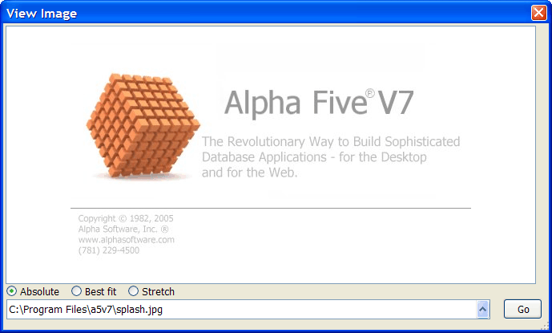

ImageViewer Control - Displaying Images on an Xdialog
The {ImageViewer} control - a control displays a .BMP, .GIF, .JPG, or .PNG image on an Xdialog.

Example
Define the properties of the {ImageViewer} control. These are read only properties that represent the height and width of the image that is being displayed. 'These values are set automatically after an image has been loaded.
dim iv as P iv.width = 0 iv.height = 0 |
Name an event to fire after the image has been loaded. Set a default display mode.
iv.loadEvent = "Load" dim mode as C mode = "Absolute" |
Select a default image to display and create the Xdialog.
dim imagename as c = a5.get_exe_path()+ chr(92) + "splash.jpg" ui_dlg_box("View Image",<<%dlg% {stretch=height,width} {imageViewer=110,20iv}; {stickto=bottom} {region} (mode:Absolute!changeMode) (mode:Best fit!changeMode) (mode:Stretch!changeMode); |
This command uses the standard syntax for smart fields.
[%p=ui_get_file("Image","BMP (*.bmp)|GIF (*.gif)|JEPG (*.jpg;*.jpeg)|PNG (*.png)",imagename)%.100imagename] {endregion} %dlg%,<<%code% |
This "Load" event fires after the
if a_dlg_button = "Load" then a_dlg_button = "" ui_msg_box("Notice", "Image has been loaded. Its size is " + iv.width + " by " +iv.height) end if |
This method uses the
if a_dlg_button = "changeMode" then a_dlg_button = "" iv.object.setMode(mode) |
This portion of the script checks to see that the file exists and then loads it into the viewer.
else if a_dlg_button = "setImage" then a_dlg_button = "" if file.exists(imagename) then iv.object.loadImage(imagename) end if end if %code%) |
See Also
{ImageViewer}, <ImageViewer>.Object.LoadImage(), <ImageViewer>.Object.SetMode()
Limitations
Desktop applications only